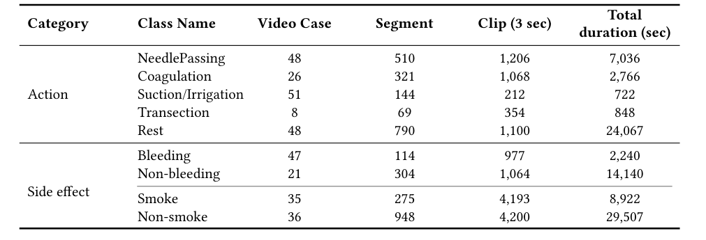
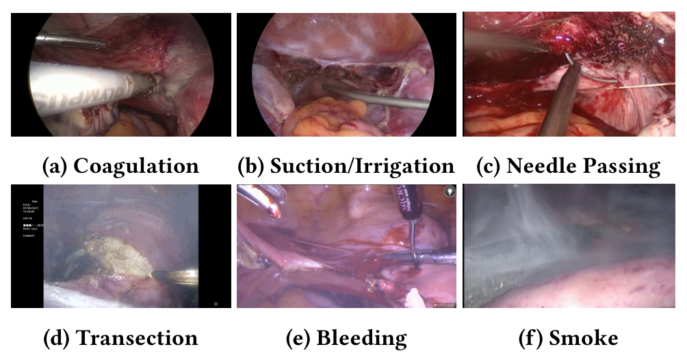
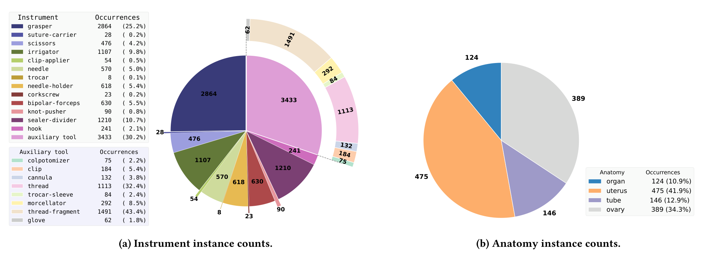
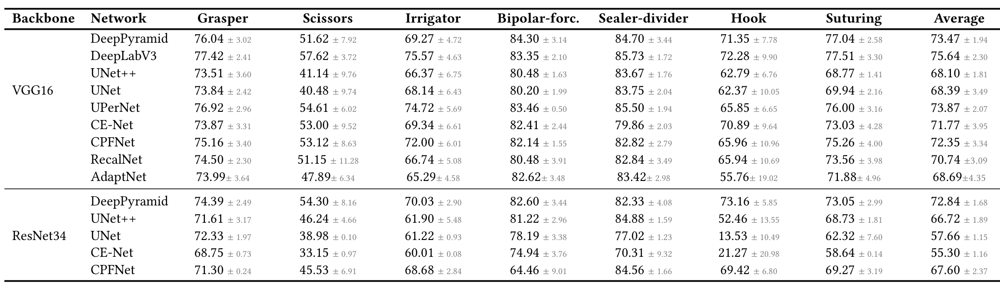
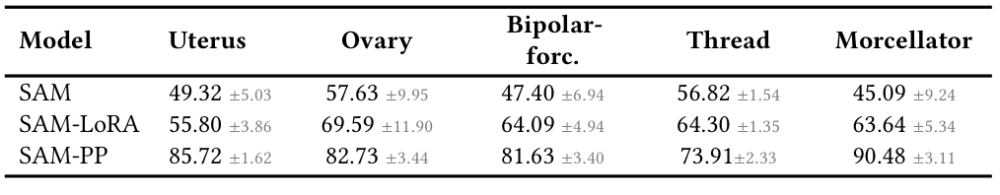

图文解读
1背景与动机
妇科腹腔镜录像用于术中导航，也用于术后记录、教学和复盘，但录像量远超人工回看的能力。已有研究分别做过器械检测、解剖分割、动作识别，用的公开数据却各管一块。
同组早先的 GLENDA、GynLap4、SurgicalActions160 主要做分类或检测；SurgAI 系列只标 2 类解剖结构；AutoLaparo 任务多，但只有 21 个视频。缺的是一份把动作、术中副作用、器械和解剖放在一起、规模足够的妇科数据。
GynSurg 想填的就是这个空缺。接下来先给出它的整体答案。
2核心观点速览
做法是把两家医院的录像分成三个子集：时间标注、像素标注、不标注。
- 动作子集：152 个视频，四类动作加 Rest，另有出血、烟雾两个二分类。
- 分割子集：15 个子宫切除视频、12,362 帧，21 类器械、4 类解剖结构。
- 未标注子集：75 个子宫切除视频。
- 基线：动作识别 ResNet-LSTM 平均 76.99；器械分割 DeepLabV3 平均 Dice 75.64；解剖约 52，输卵管不到 23。
边界： 标注者与一致性没有报告，划分单位没写明，四类标签没有联合实验。
下面逐个子集看数据从哪来、每类有多少。
3数据从哪来
动作子集选自维也纳医科大学和多伦多医科大学的 600 多台手术，30 fps、1920 × 1080。分割子集与未标注子集全部来自多伦多，分割帧分辨率 750 × 480。
两家医院各贡献多少、选片标准、伦理审批，论文未说明。许可为 CC BY-NC-ND，禁止商业使用。分割子集只有一家医院，跨中心结论无从验证。
| 数据集 | 任务 | 规模 |
|---|---|---|
| AutoLaparo | 阶段、运动、分割 | 21 个视频 |
| GLENDA | 检测 | 25,682 帧 |
| GynLap4 | 分类 | 30,682 帧等四个子集 |
| GynSurg | 动作、分割 | 152 个视频；12,362 帧 |
按帧数，GynLap4 和 GLENDA 都比 GynSurg 的分割子集大。“最大”只在视频数加任务覆盖上成立。
来源清楚了，下一个问题是类别有多不平衡。
4动作与副作用：类别极不均衡

视频被切成 3 秒、重叠 1 秒的切片作为样本。切断只出现在 8 个病例中；Rest 总时长 24,067 秒，却只有 1,100 个切片，采样规则论文未说明。
正文称穿针“在病例数上占优”（48 例），但表中吸引冲洗有 51 例，穿针只在总时长上占优。切断只有 8 例，后面关于切断的结论都只靠这几个病例。

时间标签之外，另一半数据是像素掩码。
5分割子集：长尾很重

抓钳 2,864 次，trocar 只有 8 次；辅助工具中线头碎片与缝线占大半。解剖结构中子宫 475 次、输卵管 146 次。
评测前作者剔除稀有类、合并近似类：器械留 7 类（四种缝合器械并成一类），辅助工具留 4 类，解剖剔除泛指器官留 3 类。合并规则里出现的 in-cannula 不在图 2 中，来源论文未说明。
标注者是谁、几人、一致性如何，论文未说明。没有一致性，就分不清低分来自模型还是标签。
接下来看两套训练协议。
6训练协议
动作识别比较四个网络：VGG16 加 Transformer、VGG16 加 LSTM、ResNet50 加 LSTM、ResNet3D-18。小批量做类均衡采样，SGD 学习率 0.005、多项式衰减，批大小 16。轮数一处写 40、一处写 30，以哪个为准论文未说明。
分割比较十个网络加 SAM，输入 256 × 256，80 轮、批大小 4。损失是交叉熵与对数 Dice 的加权：
$$\mathcal{L}=\lambda\, CE - (1-\lambda)\log\frac{2\sum X_{true}\odot X_{pred}+\sigma}{\sum X_{true}+\sum X_{pred}+\sigma}$$
其中 $\lambda=0.8$，$\sigma=1$。两套协议都用四折交叉验证，但划分单位正文没写，只说编号在 GitHub。
SAM 有两种提示：网格撒点，或用真值掩码的质心作单点提示（SAM-PP）。后者推理时需要已知目标位置。
协议讲清了，下面看分数。
7结果说了什么
| 模型 | 电凝 | 穿针 | 吸引冲洗 | 切断 | Rest | 平均 |
|---|---|---|---|---|---|---|
| VGG-LSTM | 51.72 | 93.10 | 61.38 | 68.36 | 48.76 | 68.40 |
| ResNet-LSTM | 56.14 | 92.74 | 74.81 | 84.28 | 56.82 | 76.99 |
| VGG-Transformer | 49.13 | 94.68 | 62.79 | 75.64 | 24.33 | 69.29 |
| ResNet3D | 45.11 | 99.54 | 91.51 | 12.27 | 57.15 | 58.46 |
穿针全部超过 90，电凝与切断常互相混淆，因为器械相似且都产生烟雾。平均列不是五类算术平均，算法论文未说明。
正文说 ResNet-LSTM 出血准确率 92.65%，表中没有这个数；它等于出血 88.26 与非出血 97.04 的平均，是类平均准确率。

器械分割 DeepLabV3 平均 75.64，双极钳与闭合切割器超过 80，剪刀最高 57.62。辅助工具里 trocar 套管全部低于 20。解剖分割整体只有约 50，输卵管 16.04 到 22.31。

SAM-PP 粉碎器达 90.48，子宫 85.72，高出最好的全自动 CNN 二十多个点。这个差距来自真值位置提示，不说明 SAM 的分割能力更强。
分数读完了，问题是这些分数能支持哪些结论。
8结果没说什么
- ResNet-LSTM 最好未经检验。 它的吸引冲洗标准差 29.01，模型间差距可能落在折间波动内。
- 穿针高分可能有泄漏。 切片重叠 1 秒，若按切片划分，相邻切片同时进入训练与测试；论文没有按视频划分的结果来排除。
- 多任务价值没有实验。 分割视频全来自多伦多，与动作视频是否同一批手术论文未说明，也没有联合训练。
- 统一超参数。 所有网络共用一套设置，排名只在这套设置下成立。
- 分辨率影响未测。 输入都缩到 256 × 256，细长的输卵管和小目标在这个尺度上像素很少。
这些疑点决定了复用时要先核对什么。
9复现要注意什么
- 从 GitHub 取四折编号，确认同一视频不跨折。
- 按论文的类别合并规则重建掩码，先弄清
in-cannula。 - 动作识别同时报告逐类准确率与 F1，不只看平均列。
- 切断只有 8 例，任何关于切断的结论都要标出样本量。